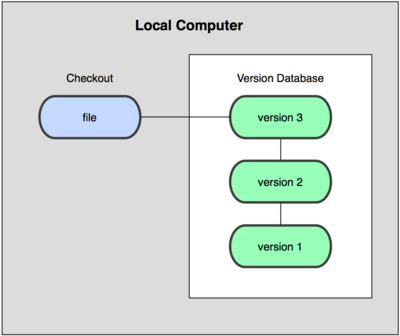
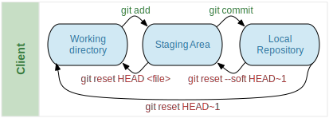
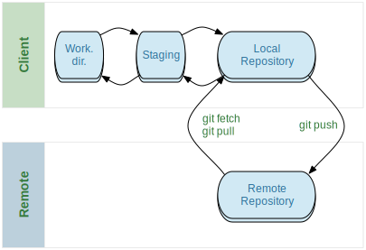
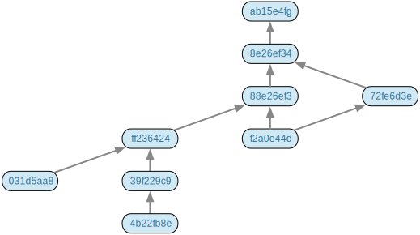
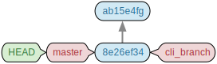
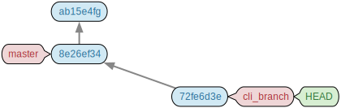
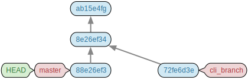
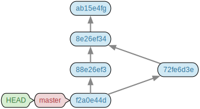

Git
- Basics of the Git Version Control System
- Understanding Branches and Merges
Le Havre University
Yoann Pigné
2014
Avant Propos
This page contains a very short, partial and incomplete sum-up of chapter 1, 2 and 3 of the Pro Git book written by Scott Chacon (CC BY-NC-SA 3.0). This is not a standalone course. This should be considered as "speech notes" for the in-class lecture.
Some definitions
Diff: a command line tool that shows, on a line-basis, the differences between two text files.
Repository: more or less a whole database of files and their history.
Working copy/directory: a local set of files and folders (a project) that contains, not only, files from a version system. Working copies are used to create new snapshots (new versions) in the version system.
Snapshot: instantaneous state of the files in a filesystem (project / folder / set of files).
commit: a set of changes applied to the repository that constitute an atomic new version in the versioning system.
branch: An diverged set of commits from the original flow of commits.
About Version Control
Different types of version control systems have evolved.
Version Control System (VCS)
- Manual local copies of individual files.
+Easy to use.-Error prone.-No team work.- tools: rcs

Centralized Version Control System (CVCS)
- A single central server contains all the versioned files (the repository). Users only old working copies.
+Allows collaboration and team work,-One single point of failure.-Most of the operations require a network connection (slow).-Branches are a pain to deal with.- tools: CVS, Subversion , ...

Distributed Version Control System (DVCS)
- Each collaborator/client contains the whole set of versioned files (the whole repository) with history, branches and all.
- After a server crash, any user's repository can be copied back to the server.
+No single point of failure.+Most operation are local. No network connection needed (fast).+Thousands of branches can be gracefully handled.- tools: Git, Mercurial, Bazaar or Darcs
Snapshot, not differences
Most Version Systems use a file-based and file modification-based storage system. Each revision is composed of a list of differences for each modified file.

In Git revisions are snapshots. Each one is like a filesystem. Only modified files are copied, the others are linked.

Mostly Local Operations
- Getting a previous version of a file, doing a
diffbetween two versions, can be done locally without any connection to the Server. - Client can commit while offline/off-VPN because the all repository is available locally.
- This means most operation are fast!
Check-sum
- Since there is no single point of synchronization (no central server) revisions can't be numbered sequentially.
- Revisions are identified with a check-sum based on the snapshot contents.
- GIT uses the SHA-1 hash algorithm to produce (most certainly) unique ids.
- A SHA-1 hash is a 40-hexadecimal string. (1640 possible combinations).
4b999440d97ee264e981d7479e7cb119e221591dGit Generally Only Adds Data
By default we never remove anything from git.
+ Nothing ever gets lost. Even if a file is removed in a new revision, it still exists in the history.
- Users need to be careful at what they commit. We don't version binaries, compiled files, logs...
The Three States
3 possible states for a file :
- committed : the file in its current version is stored in the repository.
- modified : some modifications have occurred on the file and are not yet committed.
- staged : a modified file has been selected to be part of the next commit snapshot. This state is important, it allows to chose which file to commit.
As a consequence there are 3 sections (locations) in a git project :
- the working directory;
- the staging area
- the repository (git directory)

Install Git
- On Ubuntu
sudo apt-get install git - On Windows
- Many possibilities...
- http://msysgit.github.io/
- http://windows.github.com/
Configure Git
One tool to configure git : git config.
git config --list3 configuration levels:
- the system level :
--systemoption, modifies/etc/gitconfig - the user level :
--globaloption, modifies '~/.gitconfig' - the repository level : no option, modifies
.git/config
Identity
$ git config --global user.name "John Doe"
$ git config --global user.email johndoe@example.comEditor
git config --global core.editor emacsDiff tool
Any of kdiff3, tkdiff, meld, xxdiff, emerge, vimdiff, gvimdiff, ecmerge, and opendiff
$ git config --global merge.tool vimdiffGetting Help
$ git help <verb>
$ git <verb> --help
$ man git-<verb>Git Basics
Initializing a new Repository
Usually you already have a folder with a project in it. Source files and so.
git init initializes a new repository.
cd myProject
git init
git add "*.java"
git commit -m "Initial commit for myProject"Clone an existing project
git clone pulls a complete repository to the local directory.
Warning : other VCS like Subversion use checkout. With checkout you only get a branch (a working directory). clone gets the whole repository (history, branches, tags...)
$ git clone https://github.com/pigne/CountDownWebApp.gitVarious transfer protocol are possible and depend on the server:
git://,http(s)://,user@server:/path.git.
Life cycle of a file
A file can be tracked or untracked. If it is tracked it is whether unmodified, modified, or staged.
- untracked
- tracked
- unmodified
- modified
- staged

Checking the Status of Files
The main tool for checking the status of files is git status.
$ git status
# On branch master
nothing to commit (working directory clean)See git help status.
Start tracking a file
- Start editing a file... Say
README.md - Check the status with
git status
$ git status
On branch master
Initial commit
Untracked files:
(use "git add <file>..." to include in what will be committed)
README.md
nothing added to commit but untracked files present (use "git add" to track)- Start tracking with
git add
$ git add README.md
$ git status
On branch master
Initial commit
Changes to be committed:
(use "git rm --cached <file>..." to unstage)
new file: README.mdStaging a modified file
When an already tracked file is modified we see it with git status
$ git status
On branch master
Your branch is up-to-date with 'origin/master'.
Changes not staged for commit:
(use "git add <file>..." to update what will be committed)
(use "git checkout -- <file>..." to discard changes in working directory)
modified: src/main/java/org/pigne/CountDown.java
no changes added to commit (use "git add" and/or "git commit -a")Staging a file for commit is also done with git add
$ git add src/main/java/org/pigne/CountDown.java
$ git status
# ...
Changes to be committed:
(use "git reset HEAD <file>..." to unstage)
modified: src/main/java/org/pigne/CountDown.javaIgnoring files
Some file we don't want to store in the repository
- compiled files (*.class, *.o, *.so, Eclipse's
binfolder), - dependencies and external libraries,
- archive/deployment files (*.tar, *.jar, *.zip),
- log and backup files (*.log, *~),
- local IDE / Editor configuration (Eclipse's
.settings/.classpath.project).
The `.gitignore file contains regex patterns to ignore such files :
target/
.projets
.settings/
.classpathStaged and Unstaged changes
git diff : line per line diff between files.
git diffwith no arguments to see what is changed but not yet staged.git diff --stagedto see what is staged.
Committing Your Changes
git commit will actually take a snapshot of the staged files set and add it to the repository
git commitwith non argument will open the default text editor, waiting for a commit message.git commit -m "My commit message that details what happens here..."to give an inline commit message.
Removing a file
- Removing a file from both the repository and the fiesystem
git rm readme.txt - Removing a file from the repository but keeping it in the filesystem (stop tracking the file):
git rm --cached readme.txt
Moving Files
As well as removing files, moving files also require to be committed.
$ git mv file_from file_toThen file_to is staged for the next commit.
Viewing the Commits History
$ git log
$ git help logBetter use GUI to see git history:
- Linux : git-cola, gitg, git gui, qgit, SmartGit
- Mac / Windows : github GUI
Undoing commits and Unstaging
So you committed but it does not compile? Or maybe you pushed a ".class" file? This is bad...
Unstage a file that was not already in the repository:
$ git rm --cached <file>Unstage a file that already exists:
$ git reset HEAD <file>
Undo last commit but keep your modifications in the working directory :
$ git reset HEAD~1You are sure you really don't want to keep anything from this commit:
$ git reset --hard HEAD~1Forget all your local modifications on a file and come back to the last committed version in the repository:
$ git checkout HEAD -- <file>

Remotes
In order to collaborate, common repositories have to be accessible from servers (remotes). Clients will be pushing and pulling data between their repository to other repositories.
The git remote command helps dealing with those repositories.
$ git clone https://github.com/pigne/CountDownWebApp.git
$ cd CountDownWebApp
$ git remote -v
origin https://github.com/pigne/CountDownWebApp.git (fetch)
origin https://github.com/pigne/CountDownWebApp.git (push)Add a remote with git remote add [shortname] [url]
Fetch and Pull from Remotes
git fetch [remote-name] will retrieve any new material from the given remote into the local repository.
Fetching a remote only affects the local repository. It does not change the working directory.
In order to mix the changes from the remote into the local branch, we need to
merge.by default (after a
git clone), the local "master" branch is synchronized with the remote's "master" branch.git pullwill do several steps :- fetch from a remote
- merge the remote's master to the local master and this affect the working directory
Push to the Remote
Once local changes have been committed to the local repository, we publish them to the remote server with git push [remote-name] [branch-name]
Usually the remote is called "origin" and the default branch is "master"
$ git push origin master- Inspect a remote with
git remote show [remote-name]. - Rename a remote with
git remote rename [old-name] [new-name]. - Remove a remote with
git remote remove [remote-name].

Tagging
Tags allow to associate textual information on a commit. Mostly useful for software releases.
- List all tags with
git tag
Annotated tags
A new commit is created with it.
$ git tag -a v1.4 -m 'my version 1.4'Lightweight Tags
No other information is kept, only a file with the hash of the previous commit is stored.
$ git tag v1.4-lwTagging an older revision
$ git tag -a v1.2 -m 'version 1.2' 9fceb02Sharing tags
By default git push does not propagates tags, we have to specify it:
$ git push origin v1.5
$ # or
$ git push origin --tagsBranches
The best advantage of Git over the other VCS and DVCS. Branches are fast and easy to merge.
Commits' Network Representation
Commit in Git are identified by a unique number (check-sum) and one of more likes to parent commits.

Branches are Pointers
A branch is a simple pointer to one of the commits in the repository.
- On the first commit of a repository, a default branch is created :
master - Each time a new branch is created (
git branch cli_branch), a new pointer is created. HEADis a spacial pointer that indicates which branch the working directory is in.

Working in Branches
git checkout <branch-name> moves the HEAD to the given branch and puts the snapshot of that commit into the working directory.
- A commit on a branch does not change the others.
- The
HEADpointer moves with the current branch when occurs on it.
$ git checkout cli_branch # moves HEAD
$ # modify some_file
$ git add some_file
$ git commit # moves cli_branch & HEAD
Diverging History
Committing from various branches makes the history of the repository diverge.
$ git checkout master
$ # modify some_file
$ git add some_file
$ git commit
Merging Branches
As soon as concurrent modifications are finished, we want to reintegrate branches with git merge
- To merge branch B in branch A, one have to call
mergefrom branch A. - Merging 2 branches will create a new commit with 2 (or more) parents.
- Conflicts may happen.
$ git checkout master ## be sure we are in destination branch
$ git merge cli_branch
$ git branch -d cli_branch ## remove cli_branch as it is useless
Resolving conflicts
In case of conflict the commit is aborted and problematic files are unmerged
$ git status
index.html: needs merge
# On branch master
# Changes not staged for commit:
# (use "git add <file>..." to update what will be committed)
# (use "git checkout -- <file>..." to discard changes in working directory)
#
# unmerged: index.html
#- Use
git mergetoolto call one of the merging tools available (kdiff3,tkdiff,xxdiff,meld,gvimdiff,opendiff,emerge,vimdiff). - Or edit the unmerged files.
<<<<<<< HEAD:index.html
<div id="footer">contact : email.support@github.com</div>
=======
<div id="footer">
please contact us at support@github.com
</div>
>>>>>>> iss53:index.html- At the end re-stage files and commit.
Remote branches
Remote branches are references to the state of branches on your remote repositories. They’re local branches that you can’t move.
- A remote branch is denoted as
[remote_name]/[branch_name](e.g.origin/master) git clonewill set localmasteraccording toorigin/master- when you commit on
masterbut do not "push", then you are "ahead". We can push a local branch to a remote:
$ git push origin cli_branchWe can create a new local branch that "tracks" a remote one:
$ git fetch origin $ git checkout -b bogus123 origin/fix_bug_123- any
git pullorgit pushfrom the branchbogus123will refer to remoteoriginwith branchfix_bug_123.